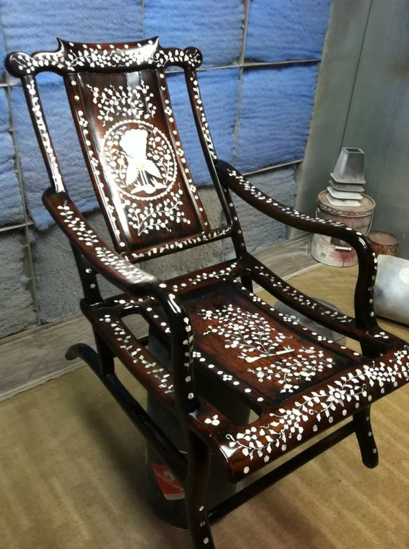
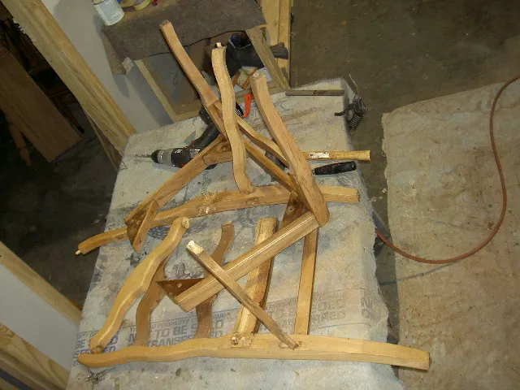
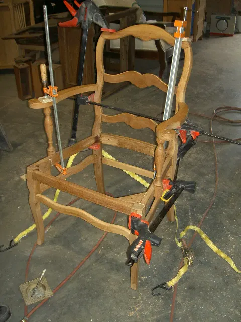
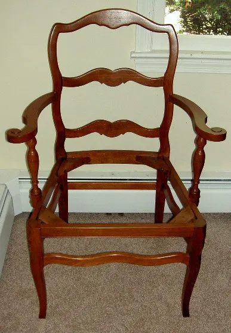
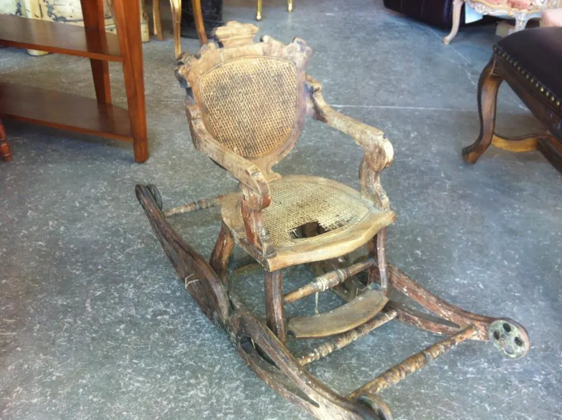
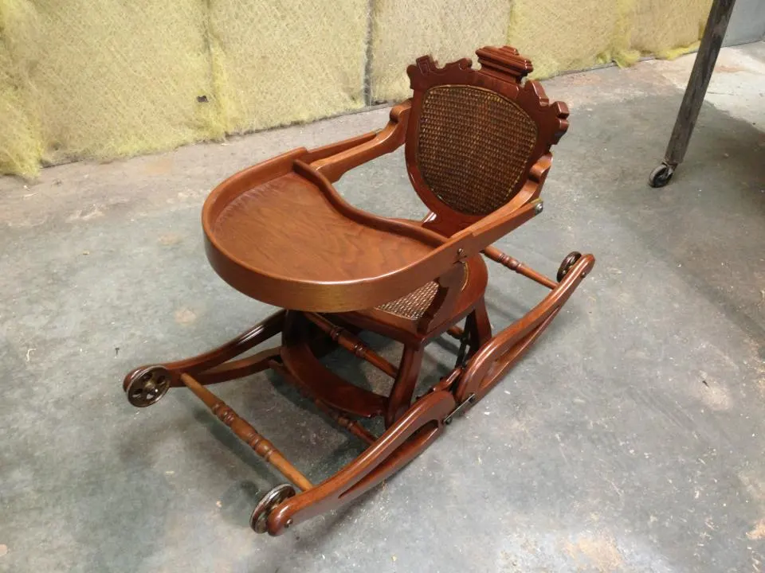

The Workshop Journal · Chair repair, explained
Wobbly is not broken.
No piece of furniture works harder than a chair, and none is given up on faster. Most of the loose, creaking, wobbling chairs that reach our bench are sound chairs with tired glue — built, from the first, to be taken apart and put right. Here is why chairs loosen, what a proper re-glue involves, and how a cane seat comes back.
The two quiet causes
Every chair loosens. Here is why.
A chair takes more punishment than anything else in the house. It is sat on and stood on, tipped onto its back legs, dragged to the table and away again — and all of it works at the joints.
For most of furniture history, those joints were set with hide glue. It holds well, and it has one property people mistake for a flaw: it lets go. It grows brittle with age, and heat and moisture loosen it — which is much of why the old chairs could be taken apart and re-glued by the next craftsman down the line. When an old chair loosens, it is not failing. It is due for the maintenance its maker assumed it would get.
The second cause is the wood itself, which keeps moving long after it becomes furniture. Every humid summer it swells; every heated winter it shrinks — always across the grain, never quite in step with the part beside it. A tenon shrinks inside its mortise, the joint opens a hair, and every sit after that works it wider. A steady indoor climate slows this down — we’ve written about that in our care guide — but no chair escapes it entirely.


Wobbly chair? Read this first
A condition, not a verdict.
A loose chair is usually a sound chair. The wood is fine; the joinery is fine; only the glue has retired.
Two home remedies make it worse. Glue squirted into a closed joint bonds to the old glue, not the wood — it never reaches the surfaces that carry the load, and it rarely holds long. Metal brackets, screws and nails split the very fibers a repair depends on, and each one makes the eventual proper repair harder than it needed to be.
And loose is a long way from lost. One ladder-back armchair reached this bench as nothing but loose parts — you will find it below, clamped and then finished. A mahogany lowboy arrived with its side smashed through and all four legs snapped off, and was structurally rebuilt. Against that ledger, a wobble is a small entry.
What re-gluing properly means
Apart, clean, square, clamped.
-
The chair comes apart
A proper re-glue begins with disassembly. The joints that have let go are eased apart, and the chair is reduced to its parts on the bench. Glue pushed into a standing chair repairs nothing — the joint has to open before it can be made right.
-
The old glue comes off
Fresh glue over old residue is glue on glue, not glue on wood. Every mating surface — tenon, mortise, dowel and socket — is cleaned back to bare wood, so the new joint grips wood the way the first one did.
-
Broken parts are mended first
A cracked leg, a split rail, a snapped spindle — each is repaired, or replaced in kind, before anything is reassembled. There is no sense gluing a chair square around a part that is about to fail.
-
Glue, clamps, patience
The chair goes back together in the right order, is pulled tight with clamps, checked square, checked that it stands level — and then left alone until the glue has fully cured. The clamps do the work; the patience keeps it done.
-
The finish is respected
The point of a repair is to keep the chair — its original tone and its value. The work is done so the finish survives it, and any marks the repair leaves are touched up by hand before the chair goes home.



† As with everything at our bench, this is hand work — no dipping tanks, no shortcuts. It has been done this way here since 1991.
Cane seat repair & replacement
The seat that is woven.
A caned seat is woven from strands of cane, and it earns its keep by flexing. After enough years of service it lets go — and a blown-out cane seat is one of the commonest ways a good chair gets exiled to the attic.
Our rule is the one from our upholstery room: where a seat or back was originally caned, it is re-caned — not boarded over. The weave is part of what the chair is, and it is redone by hand.
The evidence sits in our project book. A Victorian convertible child’s high chair arrived with its wood crumbling and its cane seat blown out; it left rebuilt — fresh hand caning, the feeding tray back in place, the rocker mechanism working again. And a caned rocker once came to us all the way from Hawaii, in pieces. We rebuilt it.


When a chair is past saving
Some chairs earn a goodbye.
Not many. A chair of solid wood and real joinery can come back from almost anything — loose parts, a snapped leg, a blown-out seat. We have rebuilt all three.
The honest no belongs to a different kind of chair: the late, mass-produced piece with no particular construction and no particular story, where rebuilding it would cost more than replacing it ever could. Wood built to be repaired repays repair; wood that was never really built does not.
The measure is never ours alone. A chair’s worth is decided at your dinner table as much as at any auction — a story the market never sees is still value, and much of the work in our shop is done for it.
So the arrangement is simple. Send photographs. If the chair deserves the bench, we will say what the work involves. If it doesn’t, we will say that instead, before a dollar is spent. The estimate is free, and so is the truth.
Answered honestly
What clients ask.
How do you fix a wobbly chair?
Properly, in four moves: the loose joints are disassembled, the old glue is cleaned off down to bare wood, any cracked or broken parts are mended, and the chair is re-glued and clamped square until the glue has cured. What doesn’t work is squirting glue into a closed joint — new glue won’t bond to old glue, and it never reaches the surfaces that carry the load. Send us a photo of the chair and we’ll quote the repair for free.
Can a cane seat be repaired or replaced?
Yes. Where a seat or back was originally caned, we re-cane it by hand rather than board it over. A Victorian child’s high chair once arrived at our shop with its wood crumbling and its cane seat blown out; it left rebuilt, with fresh hand caning and its rocker mechanism working again. Another caned rocker came to us from Hawaii in pieces, and was rebuilt.
Is a wobbly chair worth repairing, or should I replace it?
If the chair is solid wood with real joinery, repair is usually worth it. The wood is fine — only the glue has tired — and a proper re-glue makes it a working chair again. One armchair reached our bench as nothing but loose parts and went home whole. When a chair honestly wouldn’t repay the work — a late, mass-produced piece that would cost more to rebuild than to replace — we say so in the estimate, which is free either way.
* One of several notes from the bench — the rest are in The Workshop Journal.
Bring us the wobble.
Photograph the chair — the whole piece, and the joint or seat that worries you — and send it along. We’ll tell you honestly what it needs: a proper re-glue, fresh caning, or nothing at all.